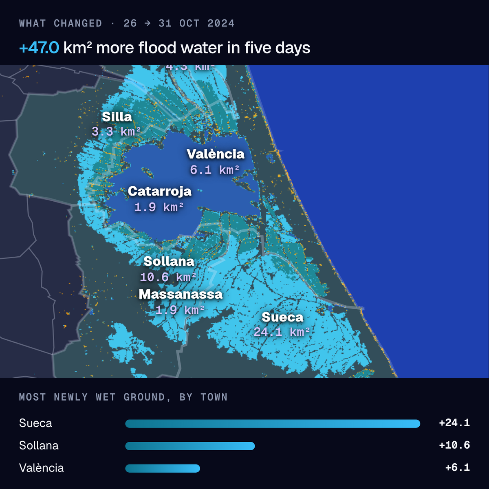
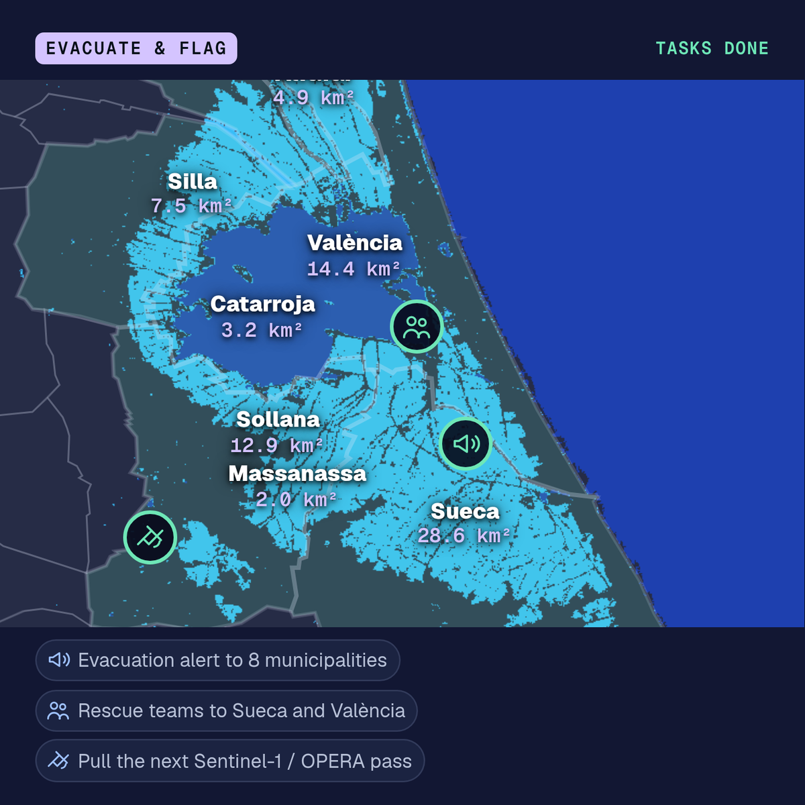
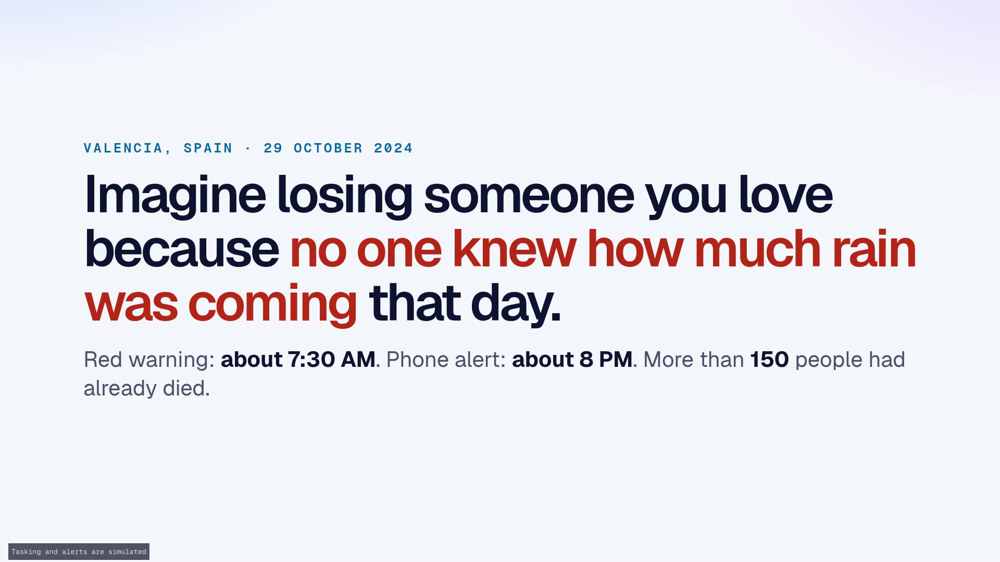

NASA Space Apps 2026 · Be An Earth System Trend Detective! · Orbit to Ground1 / 7
Valencia, Spain · 29 Oct 2024
About 230 people died because of one day of rain.
150+were already dead when the phone alert went out, around 8 PM
~1.6 yrsof València's rain fell on one town in a single day (~770 mm, about 2½ feet)
12 hoursfrom the red weather warning, around 7:30 AM, to that phone alert
Radar flood map · 31 Oct · 8 towns
AEMET event study (Turís) · AEMET normals, València 1981–2010: 475 mm a year · Newtral · El País, 26 Oct 2025 · map: NASA/JPL OPERA DSWx-S1Built solo by Parsa Riahi · Toronto
Story 1 · Valencia · what it felt like on the ground2 / 7
Imagine losing someone you love because no one knew how much rain was coming that day.
From our flood app · NASA rain and cloud, 15 Oct → 20 Nov 2024
Simulated
Our app's timeline · the same night, rewound
E
Elena, emergency coordinator, Catarroja
25 people died in her town. Illustrative composite
The danger was knownred warning for the province ·
The first life losta driver at the Benimodo ravine ·
The ravine became a riverthe Poyo surges into the towns ·
"Avoid any travel"the only phone alert, too late ·
The rain was on the record.NASA's satellites logged ~90 mm upstream that day. What no one had was a map that turned it into an alert for Elena's town.
AEMET (event study; normals 475 mm/yr) · Newtral · El País, 26 Oct 2025 · rain: NASA GPM IMERG V07, cloud: NASA POWER · timeline: our dashboard, simulatedOrbit to Ground
Story 1 · rewind, with Orbit to Ground3 / 7
Rewind. Same night, same data, with Orbit to Ground.
① Same map · what changed

② Same map · actions (simulated)


The official 30-second demoElena could have had a drafted alert for her town hours before the ~8 PM phone alert.Open the flood app →
12 hours earlier = an alert before the first death.
€4.8 bn
insured loss in the Valencia floods (Consorcio de Compensación de Seguros)
≈ €1.1 bn within reach of an alert 12 hours earlier
Illustrative estimate
Today
Gap on 29 Oct
Orbit to Ground adds
AEMET warning
red at ~7:30 AM, by zone; not an instruction to the public
a drafted, town-specific alert (simulated)
EFAS notices
emailed to agencies, not binding
observed NASA rain + radar on one screen, with a task queue
ES-Alert
~8 PM, "avoid any travel" only
message and target towns pre-filled from the map (simulated)
Copernicus EMS
first maps 31 Oct; province-wide 2 Nov
radar water each pass, linked to rain and dispatch
Red warning
The danger is known.
What if: the town alert goes out
12 h earlier; drafted by the dashboard (simulated)
First recorded death
a driver at the Benimodo ravine
The real phone alert
more than 150 already dead
How we estimatedPublished warning curves: 13% of damage avoidable at 6 h, 22% at 12 h, 30% at 24 h, ~33% at 48 h (levels off; does not stack per day). 22% × €4.8 bn ≈ €1.1 bn. That's ~€19,000 per claim over ~250,000 claims; ~78 km² of new water = more than half the city of València. No lives number for Valencia. Sources: Day (1970) via NHWC · GCA 2019 · Pappenberger 2015 · CCS · El País · València Recull 2024.
In the app: slope map → Act: winter rye → task → What if?
~$1.2 Mnet in a 2012-type drought from winter rye on the steepest squares
26,500 acres ≈ 10,700 haof the most erosion-prone farmland protected
Before plantingour map is ready in February; USDA's arrives ~11 months later
What if · illustrative estimateRye on the steepest fields costs a little most years and pays back in a dry one.
How we estimated~$44 an acre net in a drought (SARE 2012 yield gain × Iowa State costs) × 26,500 acres. Next-crop map ~82% vs ~81% from history alone. Full formulas in speaker notes.
Shared NASA inputs, one engine, one loop: signal → map → alert → task.
Same engine, every sector:✓ Flood✓ Wildfire✓ Farms✓ GroundwaterNext:DroughtSmokeInfrastructureLandslides
Parsa Riahi · built solo
One seed each, not a published benchmark · civil uses only · tasking and alerts are simulated · not affiliated with NASASlides with video (PPTX) · PDF · See it. Decide. Act.
 Radar flood map · 31 Oct · 8 towns
Radar flood map · 31 Oct · 8 towns